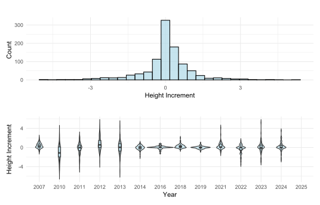
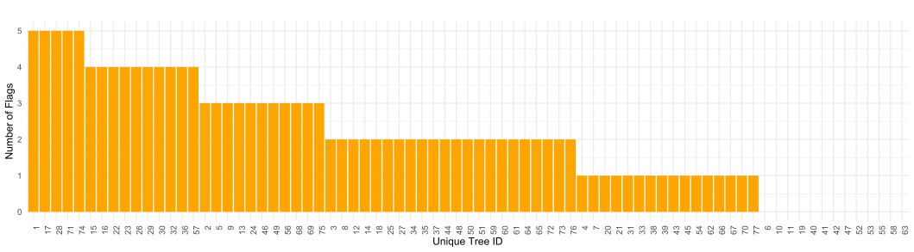
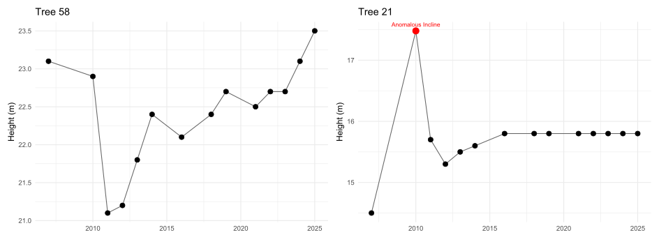
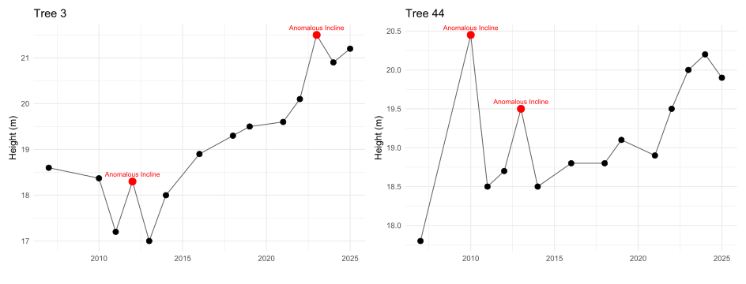
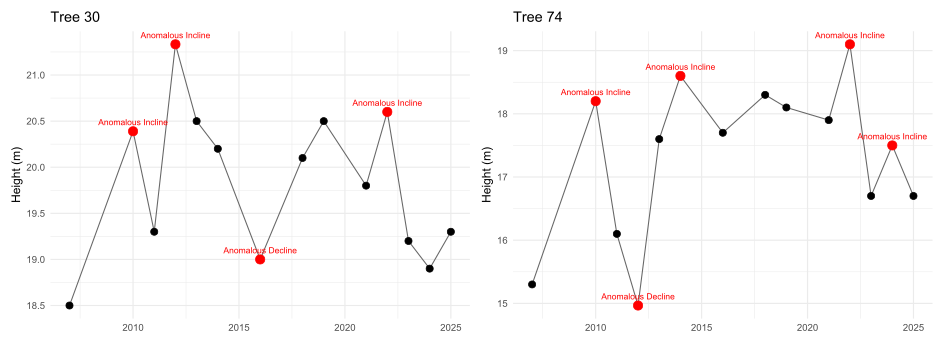
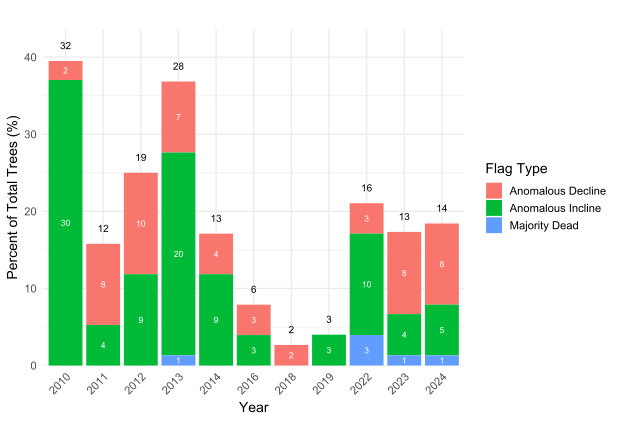
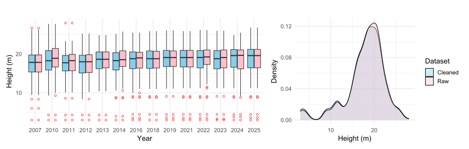
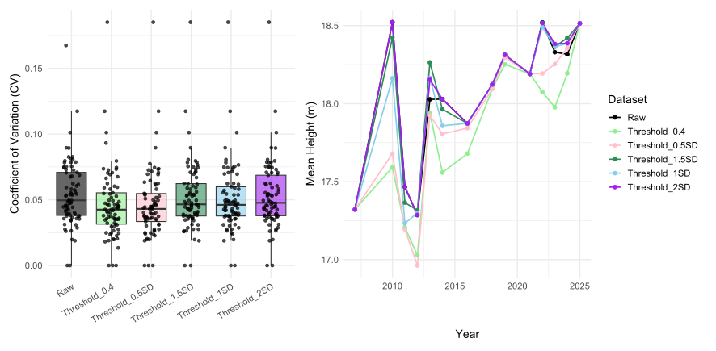

NMEG QA/QC Report
We explored the impacts of removing data from tree height observations using directional and magnitude-based flag rules for Ponderosa Pines above 3m at PPine (US-Vcp) circle plots. The objective of this exploration was to create flagging rules capable of being applied to many sites and many different types of surveyed vegetation in order to clean up and improve the overall quality of the dataset. This report reviews
Flagging rules used
Examples of how which data are flagged
Impacts of applying a highly stringent threshold (0.4m)
Impacts of a suite of standard deviation-based thresholds
Flagging Rules
To evaluate the reliability of annual tree height measurements, we applied a three-point growth increment check to individual trees’ height time series. For three consecutive observations (not necessarily consecutive years), we calculated the associated height growth increments and classified them according to their magnitude and direction (Pos = positive, Neg = negative, Stag = effectively stagnant):
Pos: increase in height greater than the threshold
Pos_Stag: increase in height at or below the threshold
Neg: decrease in height less than the negative threshold
Neg_Stag: decrease in height at or above the negative threshold
Determining what height increment threshold to use is difficult: sporadic growth patterns can reflect erroneous field measurements (especially as tree heights become larger or where terrain is complex), real (but surprising) tree growth responses to environmental conditions, or both. The distribution of height increments for this dataset is a normal distribution centered around 0m with a standard deviation (SD) of 1m. Annually, growth increment distributions are generally normal distributions centered around zero. Distributions from 2014-2019 have less spread while 2010-2013 show a wider spread of growth increments. We test a highly exclusive threshold of 0.4m (40% of one SD) as well as a suite of thresholds including 0.5m, 1m, 1.5m, and 2m.

Once the growth increments were classified using the growth increment thresholds described, we determined if the center point in the three-point window should be flagged. If the first point in the three-point window was already flagged, we use the point preceding as point one instead. To summarize, the center point only has the potential to be flagged if the sign of the growth increment (positive to negative or negative to positive) and the magnitude of both is substantial (>0.4m). Thus, out of all the combinations of the above increment types, only Pos –>Neg and Neg–>Pos have the potential to be flagged as the following:
Anomalous Incline: flag the center point in a Pos–>Neg growth increment pattern.
Majority Dead: flag growth over 0.5m if an individual is over 50% dead.
Anomalous Decline: flag the center point in a Neg–>Pos growth increment pattern where the percent dead increment between the first and second point is less than a 10% increase.
We employed an additional rule to flag impossible growth in trees:
- Dead Tree: If an individual is 100% dead, flag subsequent years where height increases.
For a threshold of 0.4m, 83% of the trees (64 out of 77 trees) are flagged at least one time. The maximum amount of flags applied to a tree was five flags over 14 years.

The following plots show an example time series for each flagging group.



Impacts of Removed Data
Using the 0.4m threshold, data was flagged and removed from every year except for the beginning (2007), end (2025), and missing years (2015, 2017, and 2020). 2010 and 2013 had the most flagged data, the majority of which were anomalous inclines. On average, about 15% of mature tree heights are flagged per year.
The annual and overall distributions of heights between the two datasets do not noticeably vary even with the strict threshold.

Lastly, we investigate a suite of threshold values ranging from half a SD (0.5m) to two SDs (2m). For every threshold value, there is a decrease in height variation per tree time series. For thresholds below 1m, there is a decrease in the annual mean height when flagged trees are removed from the data. The 1m threshold stay at or slightly below the annual means of the raw data. The thresholds above 1m stay at or slightly above the annual means of the raw data.
